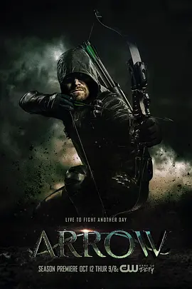

7.3
绿箭侠 第六季
Arrow Season 6
2017
美国
评分 7.3
导演:
詹姆斯·班福德 / 劳拉·贝尔西 / 乔尔·诺沃亚
演员:
斯蒂芬·阿梅尔 / 大卫·莱姆希 / 艾米莉·贝特·理查兹 / 薇拉·贺兰德 / 埃克·科伦
类型:
动作,悬疑,犯罪
剧情简介
上一季爆炸后的余波仍在星城上空盘旋，人们的生活表面恢复，却像随时可能因一点火星重新坍塌。Oliver Queen 身为市长，在公开场合维持着冷静与坚定，但当新闻镜头熄灭，他在办公室里孤身面对不断扩张的威胁。城市财政吃紧、治安恶化，仿佛每一条街道都在传递某种压迫感，他必须用两种不同的身份同时阻挡这一切。绿箭团队在行动中显得愈发吃力。监控屏幕里不断跳出的爆炸预警、绑架讯号和黑帮交易，让 Felicity 的操作台几乎没有停下的间隙。Diggle 试图稳住局面，却也因伤势与责任受到煎熬。Oliver 作为领袖感受到的压力不断堆叠，他在训练室里沉默练习，每一次拉弓都带着强烈的孤独感。真正的威胁却隐藏在暗处。一群因惧恨 Oliver 而结成的反派开始有组织地行动，他们的打击精准，目标直指星城的根基。Cayden James 的技术与策略让整个城市像被看不见的手操控，社会系统出现大范围紊乱，人们对政府与英雄的信任开始动摇。Oliver 在调查中逐渐察觉阴影背后另有布局，但线索模糊得令人不安。随着敌人的步伐逼近，团队内部也出现裂痕。旧有的信任遭到冲击，各自的秘密、选择与伤痛让彼此的距离慢慢拉开。Oliver 必须在混乱中维持自己最脆弱的平衡——既要守住市长的位置，也要维系绿箭的象征意义。每一次出击，他都清楚自己正在被算计，却仍不得不向前。当夜空再次落下，城市已处于崩溃的边缘。Oliver 终于意识到，没有任何一场战斗是只凭箭术就能获胜的。他必须直面过往的错误，也必须让团队重新凝聚，否则星城将再无重来的机会。